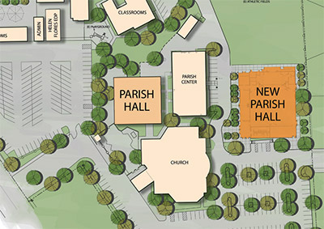

New Parish Hall
Dear Parishnors
At this historic moment for our parish, let us
remember the many blessings the Lord has given
us. As we have been taught, what we give to the
Lord he will bless and give back to us one hundred
fold. Your gift to this campaign is an opportunity
to leave a legacy for generations to come.
Therefore, all St. John the Baptist parishioners
are asked to participate with a sacrificial gift.
Your pledge will help to ensure a successful
campaign.
Rev. Rey Bersalbal, Pastor
Ways to Give
Pledges
We encourage you to consider gifts over a three year time period. In most cases donors can make a larger impact on the campaign if they can give their gift over time. You may determine payment schedules and methods to meet your own charitable or tax needs.
Matching Gifts
If your company has a matching gift program, you may be able to enhance your gift by requesting a matching gift from your company.
Planned Giving
Planned gifts, such as bequests, trusts, IRA transfers, and gifts of real estate, can be arranged through the parish and The Catholic Foundation of the Diocese of Sacramento (916.733.0266).
Through your participation in the Building to Serve Campaign:
$2, 034,000
toward total project costOur New Parish Hall
will feature:
- Gathering space for 400-500 seated at tables, more than 200 in bleachers, or more than 700 theatre-style
- A full-size, functional stage for productions of all kinds
- A regulation-size gym for home games and events
- A state of the art kitchen and ample storage
We will also renovate the existing hall with an updated kitchen, restrooms, sound system and lighting.
$966,000Our One Campaign Share
will be fulfilled:
A part of the greater Church in Northen California, our parish is committed to Bishop Soto’s Strategic Plan through the ONE Campaign. The plan addresses crucial areas of need in our Church: Lay Formation, Youth Ministry, Pastoral Care and Communications.
___________
Total campaign goal: $3 million*
Note: * New hall, renovation and ONE Campaign estimated cost: $6.6 million. Funding: parish and school savings, Capital Campaign and financing from the Diocese.

The new Parish Hall honors our history and provides for our future.
SAMPLE GIFT PLANS : Three year pledge period
| Pledged Commitment | per year | per month | per week | per day |
|---|---|---|---|---|
| $ 25,000 | $ 8,334 | $ 694 | $ 160 | $ 23 |
| $ 15,000 | $ 5,000 | $ 417 | $ 96 | $ 14 |
| $ 10,000 | $ 3,334 | $ 278 | $ 64 | $ 9 |
| $ 5,000 | $ 1,667 | $ 139 | $ 32 | $ 4.56 |
CONCEPTUAL TIMELINE FOR CONSTRUCTION
| Months 1-12 | Months 13-22 | Months 23-27 |
|---|---|---|
|
|
|
"I am grateful to those who built St. John the Baptist Church to what it is today. I look forward to helping build the parish of tomorrow."
- John Hight, Parishioner
"Our parish ministries are a true blessing
to our parish community. This much-needed
gathering place allows us to expand ministries
and access for decades to come."
- Virginia White, Campaign Chair
"We are filled with gratitude
for the Lord’s blessings and
all that has been accomplished in
our growing and thriving parish.
We look forward to this next
chapter as we build to serve and
enhance our future legacy
of witnessing the Gospel
in prayer, word and deed."
- Rev. Rey Bersabal
Pastor
New Parish Hall capital campaign Brochure
Listed below is the Parish Hall capital campaign Brochure. Also note that we have also provided the preliminary architects’ renderings for you to look at. Please take a look at the next chapter of the St. John the Baptist Catholic Church as we build to serve and enhance our future legacy of witnessing the Gospel in prayer, word and deed.
Please click on the links shown below to view the listed topics.
Parish Hall Building to Serve Campaign Information:
1. Brochure – Front
2. Brochure – Back
Renderings of St. John’s New Parish Hall
1. Overview of St. John’s Church, School, and the planned New Parish Hall
2. Parish Hall – Rendering 1
3. Parish Hall – Rendering 2
4. Parish Hall – Banquet view
5. Parish Hall – Courts view
6. Parish Hall – Stage view